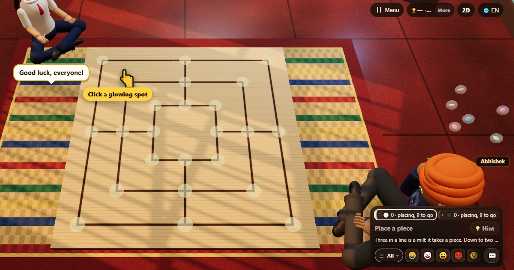

Nine Men’s Morris: play free online and learn the rules
▶ Play Nine Men’s Morris now🌍 Play online👫 Play with friends
- 👥 2 players
- ⏱ 10–20 minutes
- 👤 guest play
- 🌍 online opponents
- 🤖 computer players
- 👫 play with friends
- 🆓 free, no sign-up
Nine Men's Morris is a very old strategy game, with boards found scratched into stone from Roman times. Two players place and then move nine pieces each, trying to form lines of three, called mills. Every mill lets you remove a rival piece.

Ways to play Nine Men’s Morris
- 👤 Guest play Start straight away against computer players, no account and no sign-up. Choose 2 players.
- 🌍 Play online Get matched with real players from around the world. If nobody is free within a few seconds, computer players take the empty seats so you are never left waiting.
- 👫 Play with friends Open a room, and friends join from their own phones with a 6-digit code or by scanning a QR code. Works on the same Wi-Fi or across the internet.
- 📱 One phone Pass one phone around the table; secrets stay hidden until it is your turn.
- 👀 Watch Let the computer players show you how the game goes before you jump in.
How to play
- Placing: take turns placing a piece on any free point until each player has placed nine.
- Moving: then take turns sliding a piece along a line to a neighbouring free point.
- Whenever you form a new line of three, a mill, remove one rival piece. Pieces in a mill are protected unless all of them are in mills.
- Flying: with only three pieces left, yours may jump to any free point.
Scoring
A game ends in a win or a draw. The result table shows 1 for the winner.
Who wins
You win when the other player is down to two pieces or has no legal move. Fifty moves each without a capture is a draw.
Tips
- Don't rush mills while placing: pieces that can move freely matter more later.
- Points where lines cross are the strongest.
- Open and close the same mill over and over: each closing takes another piece.
Questions
Why is it called Nine Men's Morris?
Each player has nine pieces, or "men". "Morris" probably comes from an old word for the game's pieces.
What is flying?
A player down to three pieces may move a piece to any free point, not only a neighbouring one.
How do you play Nine Men’s Morris online with friends?
Open Nine Men’s Morris on ChitPlay and choose Play with Friends. One phone opens a room and gets a 6-digit code; your friends type the code or scan the QR code on their own phones and join. No sign-up is needed.
Can I play Nine Men’s Morris without downloading anything?
Yes. Nine Men’s Morris runs in the web browser on phones, tablets and computers. Open www.chitplay.com, pick Nine Men’s Morris and play as a guest.
How many players can play Nine Men’s Morris?
Nine Men’s Morris on ChitPlay is for 2 players. Computer players fill any empty seats, so you can always start a game.
Is Nine Men’s Morris free to play?
Yes, Nine Men’s Morris is completely free on ChitPlay. There is no real money, betting or prizes, and points have no value outside the game.
Can I play Nine Men’s Morris against the computer?
Yes. Choose Play and ChitPlay's computer players take the other seats, at an easy, normal or hard level.
What is Nine Men’s Morris called in other languages?
- हिन्दी: नाइन मेन्स मॉरिसEnglish: Nine Men’s Morris
- Hinglish: Nine Men's MorrisEnglish: Nine Men’s Morris
- Español: Juego del molinoEnglish: Nine Men’s Morris
- Português: Trilha (moinho)English: Nine Men’s Morris
- Français: Jeu du moulinEnglish: Nine Men’s Morris
- Deutsch: MühleEnglish: Nine Men’s Morris
- Bahasa Indonesia: Nine Men's MorrisEnglish: Nine Men’s Morris
- Türkçe: Dokuz TaşEnglish: Nine Men’s Morris
- Italiano: Filetto (mulino)English: Nine Men’s Morris
- 日本語: ナイン・メンズ・モリスEnglish: Nine Men’s Morris
- 한국어: 나인 멘스 모리스English: Nine Men’s Morris
- 中文: 九子棋English: Nine Men’s Morris
- Русский: МельницаEnglish: Nine Men’s Morris
- اردو: نو گوٹیEnglish: Nine Men’s Morris
- नेपाली: नौ गोटीEnglish: Nine Men’s Morris
- বাংলা: নয় গুটিEnglish: Nine Men’s Morris
More games


Cops and Robbers (Raja Rani Chor Police) · All games
Points in this game have no value. ChitPlay involves no real money, betting or prizes.